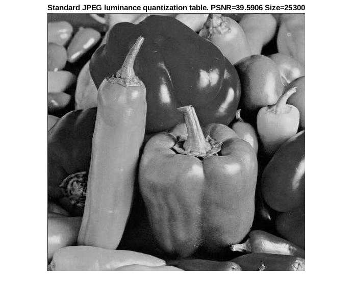
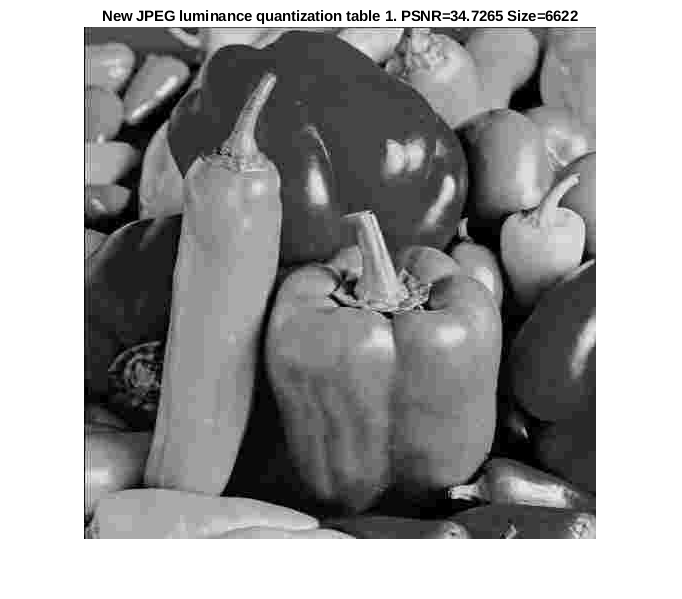

Contents
Tai Duc Nguyen, Hieu Mai - 02/01/2020 - ECES 435
clear all; close all;
PART 1
peppers_org = imread("peppers.tif");
baboon_org = imread("baboon.tif");
fprintf('| %10s | %10s | %10s | %10s |\n', "Images", "Quality", "Size", "PSNR");
fprintf('-----------------------------------------------------\n');
quality_factors = [90, 70, 50, 30, 10];
for i = 1:length(quality_factors)
filename = strcat('peppers_', num2str(quality_factors(i)), '.jpg');
imwrite(peppers_org, filename, 'Quality', quality_factors(i));
tmp_img = imread(filename);
PSNR = 20*log10(255) - 10*log10(mse(tmp_img, peppers_org));
fprintf('| %10s | %10d | %10lu | %10f |\n', "peppers", quality_factors(i), imfinfo(filename).FileSize, PSNR);
end
for i = 1:length(quality_factors)
filename = strcat('baboon_', num2str(quality_factors(i)), '.jpg');
imwrite(baboon_org, filename, 'Quality', quality_factors(i));
tmp_img = imread(filename);
PSNR = 20*log10(255) - 10*log10(mse(tmp_img, baboon_org));
fprintf('| %10s | %10d | %10lu | %10f |\n', "baboon", quality_factors(i), imfinfo(filename).FileSize, PSNR);
end
fprintf("\r\n");
fprintf(['Question PART 1:\n', ...
'1. The higher the image quality, the larger the image size.\n', ...
'2. JPEG Compression introduce lossy artifacts -- makes the image looks blocky.\n',...
'3. They occurs because of quantization.\n',...
'4. At quality factor of about 30 (PSNR=38.39), the distortion become strong.\n']);
| Images | Quality | Size | PSNR |
-----------------------------------------------------
| peppers | 90 | 48956 | 53.581544 |
| peppers | 70 | 33276 | 49.503164 |
| peppers | 50 | 27405 | 39.497821 |
| peppers | 30 | 15902 | 38.399239 |
| peppers | 10 | 8221 | 34.749630 |
| baboon | 90 | 105820 | 40.367722 |
| baboon | 70 | 57172 | 34.604096 |
| baboon | 50 | 41548 | 33.198784 |
| baboon | 30 | 29624 | 32.241234 |
| baboon | 10 | 13258 | 30.773405 |
Question PART 1:
1. The higher the image quality, the larger the image size.
2. JPEG Compression introduce lossy artifacts -- makes the image looks blocky.
3. They occurs because of quantization.
4. At quality factor of about 30 (PSNR=38.39), the distortion become strong.
PART 2
current_dir = strcat(mfilename('fullpath'), '.m');
[current_dir,~,~] = fileparts(current_dir);
lum_quant = ...
[ 16 11 10 16 24 40 51 61;
12 12 14 19 26 58 60 55;
14 13 16 24 40 57 69 56;
14 17 22 29 51 87 80 62;
18 22 37 56 68 109 103 77;
24 35 55 64 81 104 113 92;
49 64 78 87 103 121 120 101;
72 92 95 98 112 100 103 99;];
[zz_quant_dct_blks, enc_size] = JPEG_encode(peppers_org, current_dir, lum_quant);
[iZZDCTQIm, dec_img] = JPEG_decode(current_dir);
PSNR = 20*log10(255) - 10*log10(mse(uint8(dec_img), peppers_org));
hFig = figure(1);
hAxes = axes( figure );
imshow(uint8(dec_img), 'Parent', hAxes);
title(hAxes, ['Standard JPEG luminance quantization table. PSNR=', num2str(PSNR), ' Size=', num2str(enc_size)]);
lum_quant = ...
[ 80 55 50 80 120 200 255 255;
60 60 70 95 130 255 255 255;
70 65 80 120 200 255 255 255;
70 85 110 145 255 255 255 255;
90 110 185 255 255 255 255 255;
120 175 255 255 255 255 255 255;
255 255 255 255 255 255 255 255;
255 255 255 255 255 255 255 255;];
[zz_quant_dct_blks, enc_size] = JPEG_encode(peppers_org, current_dir, lum_quant);
[iZZDCTQIm, dec_img] = JPEG_decode(current_dir);
PSNR = 20*log10(255) - 10*log10(mse(uint8(dec_img), peppers_org));
hFig = figure(2);
hAxes = axes( figure );
imshow(uint8(dec_img), 'Parent', hAxes);
title(hAxes, ['New JPEG luminance quantization table 1. PSNR=', num2str(PSNR), ' Size=', num2str(enc_size)]);
lum_quant = ...
[ 7 5 9 2 18 226 231 255;
26 17 35 68 177 254 255 255;
8 35 15 84 252 255 255 255;
118 172 244 247 255 255 255 255;
243 250 252 255 255 255 255 255;
138 201 255 255 255 255 255 255;
133 255 255 255 255 255 255 255;
255 255 255 255 255 255 255 255;];
[zz_quant_dct_blks, enc_size] = JPEG_encode(peppers_org, current_dir, lum_quant);
[iZZDCTQIm, dec_img] = JPEG_decode(current_dir);
PSNR = 20*log10(255) - 10*log10(mse(uint8(dec_img), peppers_org));
hFig = figure(3);
hAxes = axes( figure );
imshow(uint8(dec_img), 'Parent', hAxes);
title(hAxes, ['New JPEG luminance quantization table 2. PSNR=', num2str(PSNR), ' Size=', num2str(enc_size)]);
fprintf(['Question PART 2:\n', ...
'It is not possible to achieve both a lower file size and a higher PSNR. Because the lossless\n', ...
'encoder will only be able to reduce the number of bits representing the sequence when the \n',...
'sequence is "regular". If the quantization interval is high, then most of the numbers after\n',...
'qunatization become highly regular, but the error is higher.\n']);
function [zz_quant_dct_blks, enc_size] = JPEG_encode(X, current_dir, lum_quant)
[nrow, ncol] = size(X);
image_flat = X(:);
block_size = 8;
blocks = zeros(int16(length(image_flat)/(block_size^2)), block_size^2);
k = 1;
i = 1;
while i <= length(image_flat)
for j = 0:block_size-1
m = i + ncol*j;
n = j*block_size + 1;
blocks(k,n:n+block_size-1) = image_flat(m:m+block_size-1);
end
if (mod(k,int16(ncol/block_size)))
i = i + block_size;
else
i = block_size^2*k + 1;
end
k = k + 1;
end
zz_quant_dct_blks = zeros(size(blocks));
for i = 1:size(zz_quant_dct_blks,1)
blk_dct = round(dct2(reshape(blocks(i,:), block_size, block_size))./(lum_quant));
zz_quant_dct_blks(i,:) = ZigzagMtx2Vector(blk_dct);
end
enc_size = JPEG_entropy_encode(nrow, ncol, block_size, ...
lum_quant, zz_quant_dct_blks, current_dir, []);
end
function [iZZDCTQIm, dec_img] = JPEG_decode(current_dir)
[nrow,ncol,dct_block_size,iQ,iZZDCTQIm] = JPEG_entropy_decode(current_dir);
dec_img = zeros(nrow, ncol);
k = 1;
for i = 1:dct_block_size:nrow
for j = 1:dct_block_size:ncol
dec_img(j:j+dct_block_size-1, i:i+dct_block_size-1) = ...
idct2((iQ).*Vector2ZigzagMtx(iZZDCTQIm(k,:)));
k = k + 1;
end
end
end
wine /home/sweet/2-coursework/435eces/assgn2/jpeg_entropy_encode.exe: Signal 24
wine /home/sweet/2-coursework/435eces/assgn2/jpeg_entropy_decode.exe: Signal 100
wine /home/sweet/2-coursework/435eces/assgn2/jpeg_entropy_encode.exe: Signal 24
wine /home/sweet/2-coursework/435eces/assgn2/jpeg_entropy_decode.exe: Signal 100
wine /home/sweet/2-coursework/435eces/assgn2/jpeg_entropy_encode.exe: Signal 24
wine /home/sweet/2-coursework/435eces/assgn2/jpeg_entropy_decode.exe: Signal 100
Question PART 2:
It is not possible to achieve both a lower file size and a higher PSNR. Because the lossless
encoder will only be able to reduce the number of bits representing the sequence when the
sequence is "regular". If the quantization interval is high, then most of the numbers after
qunatization become highly regular, but the error is higher.
 